Moje vježbe i projektni zadaci iz Digitalnih multimedija 1!
Vježba 1 - font
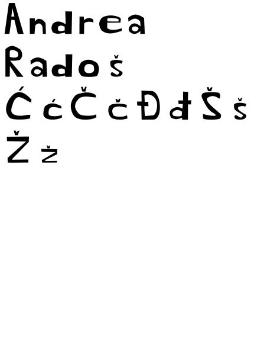
Vježba 2 - crtanje Bezierovih krivulja u koordinatnom sustavu
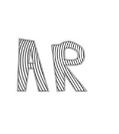
Vježba 3 - sustavi boja, transformacije, dupliciranje, grupiranje
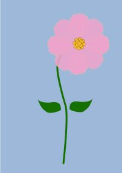
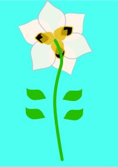
Vježba 4 - tehnika spajanja, izrezivanja i gradijenti
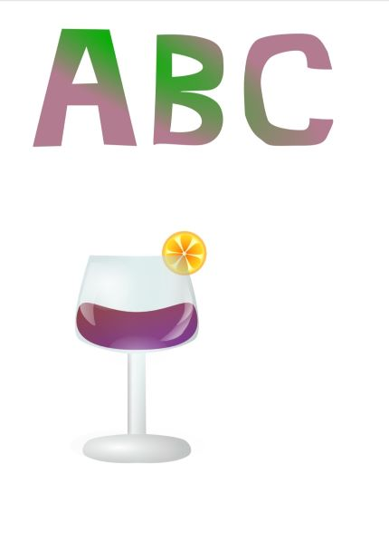
Projektni zadatak 1
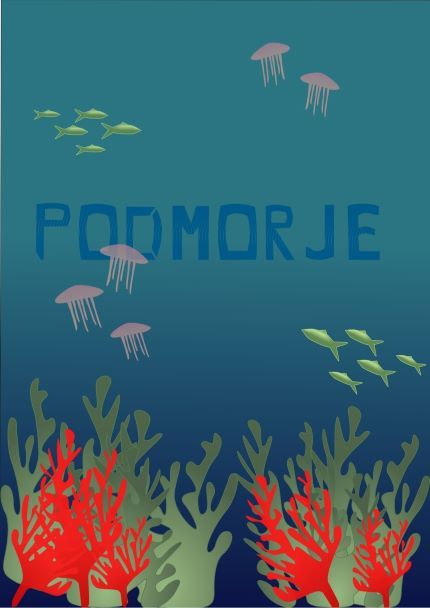
Vježba 5 - retuširanje
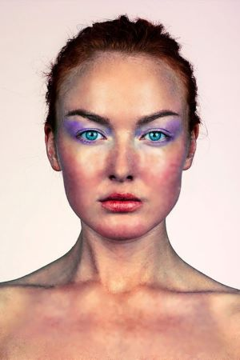
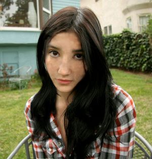
Vježba 6 - koloriranje
Vježba 7 - fotomontaža
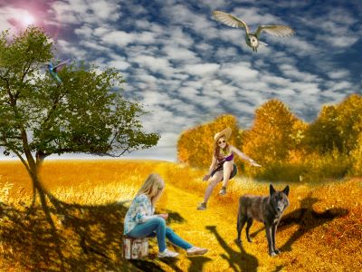
Projektni zadatak 2
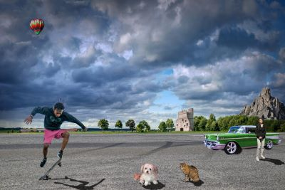
Vježba 8 - obrada videa - kinemagraf
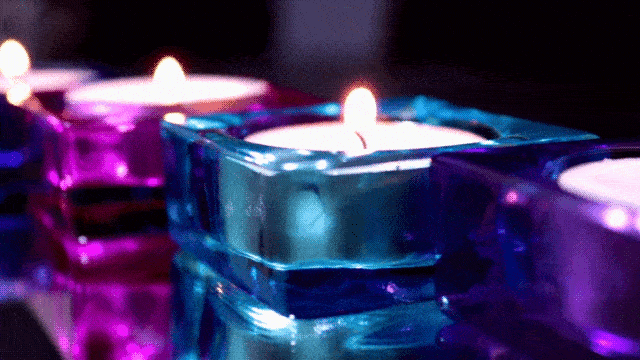
Vježba 9 - obrada videa
Vježba 10 - HTML/CSS
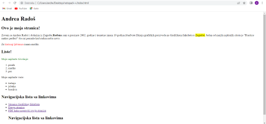